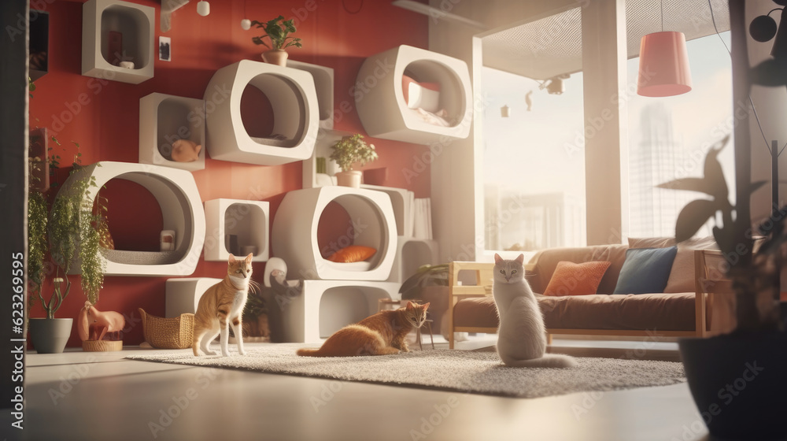
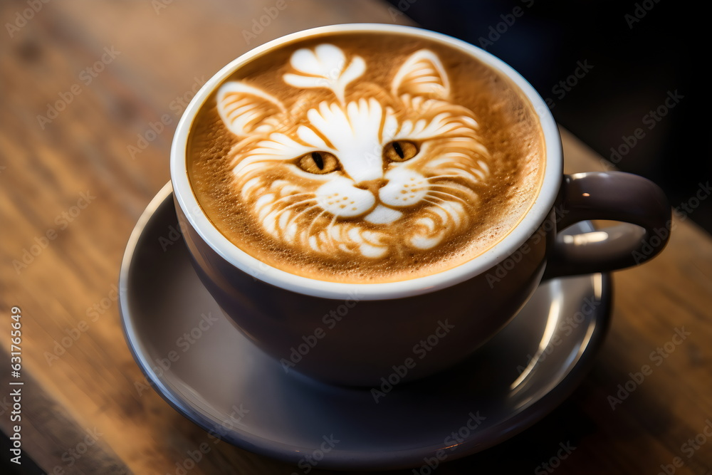
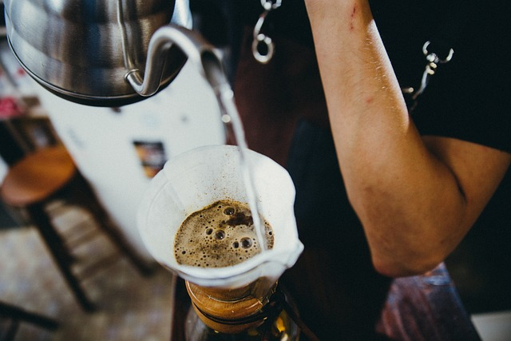
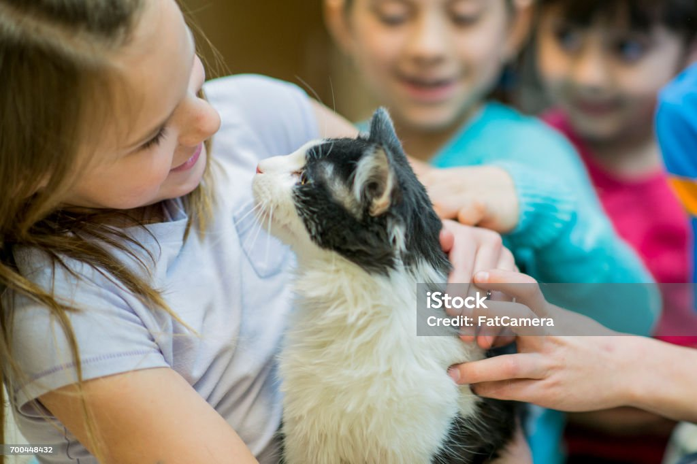

Latte Cat Café esta dirigido por un grupo de amigos apasionados y amantes de los felinos. La idea del Cat Cafe surgio porque notabamos cada vez mas que los gatos son abandonados o que se pierden a menudo tienen que pasar mucho tiempo en refugios de animales, donde pueden estar expuestos a enfermedades, estrés y maltrato. Y decididmos que a travez de Latte Cat Cafe podriamos lograr la oportunidad de que se puedan adoptar ofreciendoles una oportunidad de una vida mejor.
Con la ayuda de la comunidad, pudimos lograr el objetivo de albergar a gatos rescatados hasta concretar las adopciones, este lindo proyecto le da la oportunidad a nuestros cat lovers de involucrarse directamente en la rehabilitación de los michis, socializando, jugando y dándoles el afecto humano que tanto necesitan. La interacción entre ambos nos ayuda a fomentar la tenencia responsable de mascotas.
 Latte Cat Cafe se basa tambien en la creencia de que los gatos pueden tener un efecto positivo en el bienestar de las personas. Los estudios han demostrado que acariciar a un gato puede reducir el estrés y la ansiedad, y mejorar el estado de ánimo. Además, los gatos pueden proporcionar compañía y apoyo emocional.
Diseñamos un lindo santuario para los felimos de Latte Cat Cafe, con el objetivo de albergar gatitos rescatados hasta concretar sus adopciones y al mismo tiempo, ofrecerles a los amantes felinos una experiencia única e increíble junto a ellos. Y por supuesto, acompañado de un buen café y delicias.